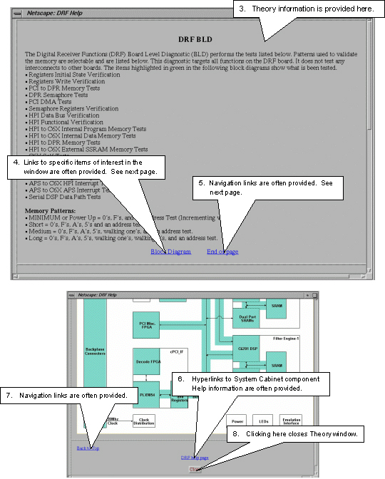

Proprietary to General Electric
Direction 5500113, Rev# 3
Discovery MR450 1.5T Service Methods
Module Version 2.0, Version Date 3/7/08
Proprietary to General Electric |
In proprietary mode diagnostic test theory is available for many test. Help information is also available concerning each of the components inside the System Cabinet.
Illustration 1: DIAGNOSTIC THEORY INFORMATION

See Illustration 2 for the screens that are displayed.
A window like the following that provides test theory is displayed:
Illustration 2: THEORY INFORMATION

Illustration 3: EXAMPLE HELP SCREEN